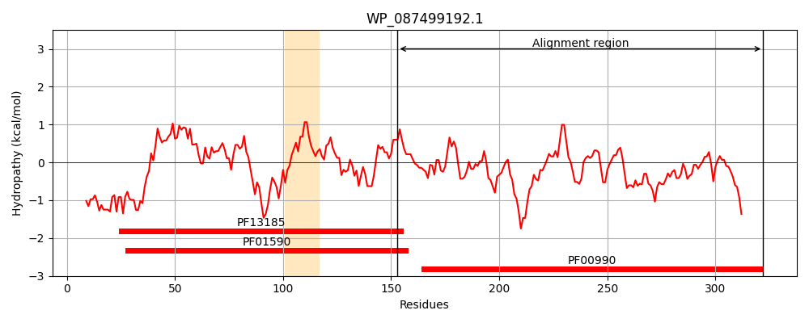
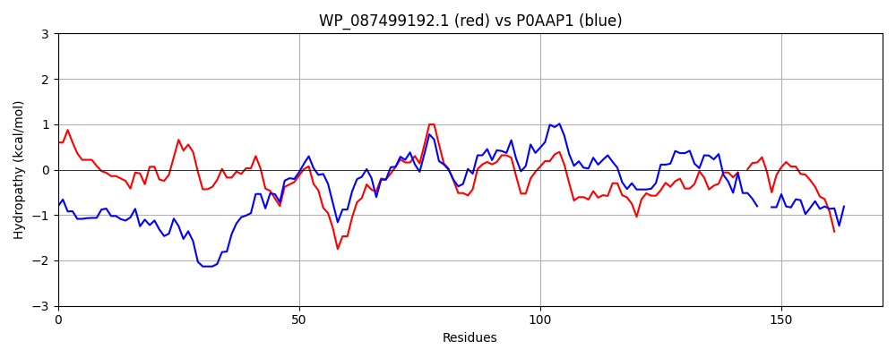

Hit Accession: P0AAP1
Hit TCID: 9.B.34.1.2
Hit Description: gnl|BL_ORD_ID|8680 gnl|TC-DB|P0AAP1|9.B.34.1.2 Probable diguanylate cyclase AdrA OS=Escherichia coli (strain K12) GN=adrA PE=1 SV=1
Mach Len: 171
e:0.000000
Query TMS Count : 1
Hit TMS Count: 5
TMS-Overlap Score: 0.850000
Predicted Substrates:None
BLAST Alignment:
Score: 232 , Bit scores: 93 bits, E-value: 9.3e-22, Alignment length: 171, Percentage identity: 32
Query: 153 IVEDEFKVLDAATSDELTGLFNRRGFLTLAEYALLTAQRRQEPVSLAFVDLDRFKYINDTWGHEEGDRALIAIADLMKAAFRESDILARQGGDEFIILFANTSRHDAATAMETLSHNVARFNQQAAHPWQLAFSWGCVEYDP-ASHPSLNALVATADRLMYQAKQKQGRER 322
+ E + ++ +T D +TG++NRR + T+ +R +L +D+D FK INDTWGH+ GD A++A+ ++ R SD++ R GGDEF ++ + T A TAM + + L S G +P SH + +AD +Y+AK K GR R
Sbjct: 199 LAEHKRRLQVMSTRDGMTGVYNRRHWETMLRNEFDNCRRHNRDATLLIIDIDHFKSINDTWGHDVGDEAIVALTRQLQITLRGSDVIGRFGGDEFAVIMSGTPAESAITAMLRVHEGLNTLRLPNTPQVTLRISVGVAPLNPQMSH--YREWLKSADLALYKAK-KAGRNR 366 | Protein Hydropathy Plots: |
|---|
|  |  |
Pairwise Alignment-Hydropathy Plot:
|
|---|
|  |